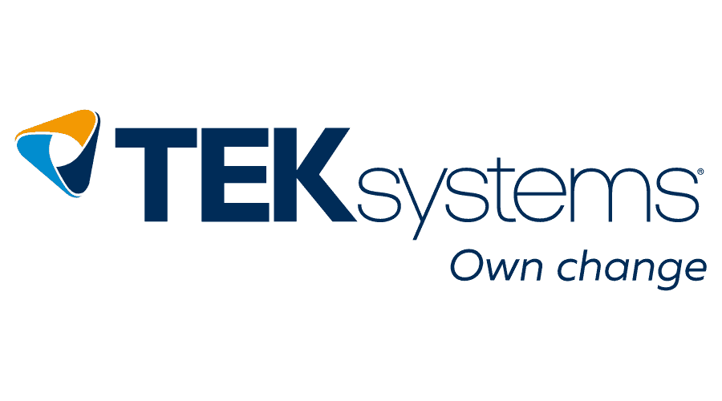

|
|
{kind=link}
|
Academic Background: I hold a Master's degree in Computer Science and Engineering with a focus on Artificial Intelligence. My academic journey encompassed a blend of coursework and hands-on learning in Machine Learning, Computer Vision, and Deep Learning, which laid the groundwork for my industry-focused project development. Prior to this, I gained a strong foundation in core computer science subjects through my undergraduate studies. Practical Experience: I’ve built and deployed multiple real-world projects centered around Machine Learning, Computer Vision, and Generative AI. These include an AI-powered prescription parser using AWS Textract and Hugging Face, a real-time hospital resource tracker with PySpark and Streamlit, and a full-stack Kubernetes-deployed Link-in-Bio manager. My work focuses on scalable, production-grade AI/ML systems. Technical Skills: I am proficient in Python, SQL, and core data engineering and ML frameworks including PySpark, AWS (Textract, SageMaker, Lambda, DynamoDB), FastAPI, Streamlit, Docker, and PostgreSQL. I also have experience with advanced ML toolkits like LangChain, FAISS, and Hugging Face Transformers, and regularly work with REST APIs, cloud infrastructure, and MLOps tools like MLflow and Airflow. Professional Roles: I’ve worked across multiple data-centric and AI-driven roles:
Summary: I’m a passionate Machine Learning and Data Engineering enthusiast, with strong software engineering fundamentals and a keen interest in building AI solutions that drive real-world impact. With proven project delivery across both backend and ML pipelines, I’m continuously exploring cutting-edge tools like Generative AI, LLMs, and vector databases. I aim to grow into a core technical contributor at companies solving high-impact problems. I’m open to opportunities and collaborative projects in this space. Feel free to view my Resume and connect with me via e-mail. |
|
Aug '25 |
Received 50 Days Badge on Leetcode for consistent problem solving |
|
May '25 |
Completed coursework for Master’s in Computer Science at GITAM University (Graduation pending) |
|
Dec '23 |
Completed full-time role at TEKsystems as Software Engineer |
|
Aug '23 |
Received SPOT Award at TEKsystems for excellence in project execution |
|
Jun '23 |
Cleared SnapLogic Certification for Data Integration and Pipelines |
|
Dec '22 |
Earned Snowflake SnowPro Core Certification |
|
Sept '22 |
Joined TEKsystems as a full-time Software Engineer |
|
Aug '22 |
Completed Software Engineer Internship at TEKsystems (Feb 2022 – Aug 2023) |
|
May '22 |
Graduated with B.Tech in Computer Science from GITAM University |
|
Jun '21 |
Joined Coromandel International Limited as Data Engineering Intern |
|
Feb '21 |
Worked as Student Intern at Techimax Private Limited |
|
|
State University of New York at BuffaloSpecialization: Artificial Intelligence & Machine Learning Jan '24 – May '25 Coursework: • Advanced Machine Learning • Computer Vision and Image Processing • Deep Learning with TensorFlow and PyTorch • Reinforcement Learning • Data Engineering with Spark and Hadoop • Computer Security • Statistical Data Mining • Advanced Algorithms and Design Patterns |
|
|
GITAM UniversityJun '18 – May '22 Coursework: • Operating Systems • Database Management Systems • Object-Oriented Programming • Compiler Design • Design and Analysis of Algorithms • Web Development with Flask and React • Introduction to Machine Learning |
|

|
Hyderabad, India Sept '22 – Dec '23
AI-Powered Document Ingestion and Human-in-the-Loop Correction System |
|
|
Hyderabad, India Feb '22 – Aug '22
ETL and Data Warehousing Automation using ODI 12C |
|
|
Hyderabad, India Jul '21 – Aug '21
Time Series Forecasting for Chemical Store Inventory Optimization |

|
Hyderabad, India Feb '21 – Mar '21
Data Cleaning & Reporting Dashboards (Mini Internship Project) |

|
AWS Textract, Hugging Face Transformers, Streamlit, PostgreSQL | Jan. 2023 – Apr. 2023
• Built an OCR + NLP pipeline to extract structured fields such as patient name, dosage, and drug info from scanned medical prescriptions. |

|
YOLOv8, OpenCV, Streamlit, Python, Object Detection | May. 2024 – Jul. 2024
• Designed and trained a custom YOLOv8 model to detect road damages like potholes, cracks, and bumps from drone/satellite images. |

|
Scikit-learn, XGBoost, Pandas, Flask, Matplotlib | Dec. 2023 – Jan. 2024
• Built a binary classifier to predict insurance leads’ likelihood to convert using 100K+ customer profiles and agent logs. |

|
PostgreSQL, Power BI, Data Modeling, DDL/DML | Oct. 2023 – Nov. 2023
• Designed a dimensional data model (star schema) to track orders, products, sellers, and delivery metrics in an online marketplace. |

|
PySpark, Streamlit, Time-Series Analysis, Kafka | Jul. 2023 – Sep. 2023
• Simulated 50,000+ real-time equipment events across ICU, ER, and Radiology using PySpark streaming jobs. |

|
Research Survey | Deep Learning, Model Security, Adversarial Attacks, Privacy Preservation | Jan. 2024 – Mar. 2024
• Conducted comprehensive analysis of security vulnerabilities in deep learning models including adversarial attacks, model inversion, and membership inference attacks. |

|
Research Survey | LLM Security, Prompt Injection, Jailbreaking, Privacy Risks | Feb. 2024 – Apr. 2024
• Investigated emerging security threats in Large Language Models including prompt injection, jailbreaking, and data extraction attacks. |
This template is a modification to Jon Barron's website. Find the source code to my website here.
Do not scrape the HTML from this page itself, as it includes analytics tags that you do not want on your own website, use the github code instead and either remove the google tag or replace it with your own tag.